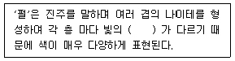
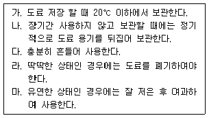

자동차보수도장기능사 (2015-04-04 기출문제)
1과목: 임의 구분
1. 승용차의 프론트바디 구성품으로 적합하지 않은 것은?
- 프론트 크로스 멤버
- 라디에이터 서포트 패널
- 후드
- 센터 필러
(정답률: 82%)

2. 엔진 냉각장치 중 전동 팬에 대한 설명으로 틀린 것은?
- 엔진 컨트롤유닛(ECU)의 명령에 의해 구동된다.
- 냉각수 온도 센서의 신호를 통해 구동된다.
- 전동 팬이 장착된 차량은 일정한 풍량을 항상 확보할 수 있다.
- 전동 팬은 압력센서가 냉각수 압력을 감지하여 규정압력에 도달하면 자동으로 팬을 회전시킨다.
(정답률: 71%)
3. 타이어 트레드 고무의 표면 마모 현상과 관계없는 것은?
- 얼라이먼트(토인,토아웃)에 의한 횡력
- 커브를 돌 때의 횡력
- 공기압, 하중, 속도, 도로상태 등의 사용조건
- 하이드로 플래닝 현상 발생 시
(정답률: 85%)
4. 자동차의 조명등 및 표시등의 기능에 대한 내용으로 가장 거리가 먼 것은?
- 전조등: 야간 운행을 위한 조명
- 후진등: 변속레버를 후진 위치로 하였을 때
- 와셔액 경고등: 와셔액이 너무 많을 때 점등되는 표시등
- ABS 경고등: ABS 작동 시 점멸되는 표시 등
(정답률: 89%)
5. 자동차의 차체 모양에 따른 분류로 차의 지붕을 접을수 있는 구조로 만든 자동차는
- 세단
- 쿠페
- 컨버터블
- 웨건
(정답률: 91%)
6. 트러스 형 프레임의 특징이 아닌 것은?
- 중량이 가볍다.
- 강성이 풍부하다.
- 대량생산이 유리하다.
- 고성능 자동차에 적합하다.
(정답률: 79%)
7. 각도를 나타내는 등식 중에서 틀린 것은?
- 1회전 = 360°
- 1 = 60´ 〫
- 1´ = 60″
- 1 rad = 90 /π
(정답률: 74%)
8. 자동차의 여유 구동력에 관한 설명으로 틀린 것은?
- 최대구동력과 주행저항의 차이이다.
- 최고속도에서의 여유구동력은 영(0)이다.
- 여유구동력은 가속력이나 구배에서 사용된다.
- 최고속도에서의 여유구동력은 최대값이 된다.
(정답률: 70%)
9. 타이어 규격 2⑤/65R15 92 H 중 “65”가 의미하는 것은?
- 타이어 폭(mm)
- 편평비(%)
- 림의 직경(인치)
- 최대 하중 지수
(정답률: 86%)
10. 국제단위계(SI단위)에서 힘의 단위로 맞는 것은?
- N
- m/s2
- Pa
- N∙m
(정답률: 80%)
11. 자동차도장 색상차이의 원인이 잘못 연결 된 것은?
- 자동차 생산업체의 원인 - 신차도료의 납품업체가 변경 된 경우
- 도료 제조업체의 원인 - 제조공정에서 교반이 불충분 한 경우
- 현장 조색시스템관리 도료대리점의 원인 - 도료제조용 안료가 변경 된 경우
- 도장기술자에 의한 원인 - 신너의 희석이 부적절한경우
(정답률: 62%)
12. 흐름 현상이 일어나는 원인이 아닌 것은?
- 신너 증발이 빠른 타입을 사용한 경우
- 한 번에 두껍게 칠하였을 경우
- 신너를 과다 희석 하였을 경우
- 스프레이건 거리가 가깝고 속도가 느린 경우
(정답률: 80%)
13. 일반적으로 블렌딩 도장 시 도막은 얇게 형성되어 층이 없고 육안으로 구분이 되지 않도록 하기 위한 방법 중 가장 거리가 먼 것은?
- 블렌딩 전용 신너를 사용 한다.
- 도료의 분출량을 많게 한다.
- 패턴의 모양을 넓게 한다.
- 도장 거리를 멀게 한다.
(정답률: 74%)
14. 서로 다른 전하는 끌어당기고 같은 전하는 반발하는 원리를 이용하여 도료입자들이 (-) 전하를 갖게 하여 피도물에 도착 시키는 도장 방법은?
- 에어스프레이 도장
- 에어리스스프레이 도장
- 정전도장
- 진공증착도장
(정답률: 81%)
15. 마스킹 종이가 갖추어야 할 조건으로 틀린 것은?
- 마스킹 작업이 쉬워야 한다.
- 도료나 용제의 침투가 쉬워야 한다.
- 열에 강해야 한다.
- 먼지나 보푸라기가 나지 않아야 한다.
(정답률: 87%)
16. 솔리드 색상을 조색하는 방법으로 틀린 것은?
- 주 원색은 짙은 색부터 혼합한다.
- 견본색보다 채도는 맑게 맞추도록 한다.
- 색상이 탁해지는 색은 나중에 넣는다.
- 동일한 색상을 오래 동안 주시하면 잔상현상이 발생되기 때문에 피한다.
(정답률: 65%)
17. 공기압축기 설치장소로 맞지 않은 것은?
- 건조하고 깨끗하며 환기가 잘되는 장소에 수평으로 설치한다.
- 실내온도가 여름에도 40℃ 이하가 되고 직사광선이 들지 않는 장소가 좋다.
- 인화 및 폭발의 위험성을 피할 수 있는 방폭벽으로 격리되지 않고 도장 시설물과 같이 설치 되어야 한다.
- 점검과 보수를 위해 벽면과 30cm 이상 거리를 두고 설치한다.
(정답률: 86%)
18. 상도 도장 작업 중에 발생하는 도막의 결함이 아닌 것은?
- 오렌지 필
- 핀 홀
- 크레터링
- 메탈릭 얼룩
(정답률: 45%)
19. 메탈릭 색상의 도료에서 도막의 색채가 금속입체감을 띄게 하는 입자는?
- 나트륨
- 알루미늄
- 칼슘
- 망간
(정답률: 88%)
20. 플라스틱 부품의 프라이머 도장에 대한 설명 중 틀린 것은?
- 후속 도장의 부착성을 강화 한다.
- 소재의 내후성을 향상시킨다.
- 상도의 정전도장을 할 수 있도록 도전성을 부여한다.
- 도막의 물성은 향상되나 충격 등에 대한 흡수성은 약해진다.
(정답률: 65%)
2과목: 임의 구분
21. 중도용 도료로 사용되는 수지에 요구되는 성질이 아닌 것은?
- 광택성
- 방청성
- 부착성
- 내치핑성
(정답률: 62%)
22. 물 자국(water spot) 현상의 발생원인이 아닌 것은?
- 새의 배설물이 묻었을 경우 장시간 제거하지 않았을 때 발생 할 수 있다.
- 도막이 두꺼워서 건조가 부족한 경우 발생 할 수 있다.
- 급하게 열처리를 했을 경우에 생길 수 있다.
- 건조가 되지 않은 상태에서 물방울이 묻었을 때 나타날 수 있다.
(정답률: 56%)
23. 도장조건이 메탈릭 색상의 조색에 미치는 영향으로 맞는 것은?
- 건조가 느린 신너를 사용하면 정면색상이 다소 밝아진다.
- 건조가 빠른 신너를 사용하면 정면색상이 다소 밝아진다.
- 신너의 양이 많은 경우에는 정면색상이 어두워진다.
- 지건신너를 많이 사용하면 정면색상이 밝아진다.
(정답률: 66%)
24. 안티(앤티) 칩 프라이머와 거리가 가장 먼 것은?
- 소프트 칩 프라이머
- 해비 칩 프라이머
- 서페이서 프라이머
- 하드 칩 프라이머
(정답률: 72%)
25. 크로스 컷트 시험기의 주된 용도는?
- 내구성 측정
- 유동성 측정
- 부착성 측정
- 건조성 측정
(정답률: 59%)
26. 도료의 기본 요소에 해당하지 않는 것은?
- 명도
- 수지
- 안료
- 용제
(정답률: 74%)
27. 플라스틱 용접을 하기 전에 소재의 종류를 알아보기 위한 시험법의 종류가 아닌 것은?
- 녹임 시험
- 솔벤트 시험
- 긁힘 시험
- ISO코드확인(색깔코드)
(정답률: 54%)
28. 프라이머 서페이서를 스프레이 할 때 주의할 사항에 해당하지 않는 것은?
- 퍼티 면의 상태에 따라서 도장하는 횟수를 결정한다.
- 도막은 균일하게 도장한다.
- 프라이머-서페이서는 두껍고 거친 도장을 할수록 좋다.
- 도료가 비산되지 않도록 한다.
(정답률: 87%)
29. 연마에 사용하는 샌더기 중 타원형의 일정한 방향으로 궤도를 그리며 퍼티면의 거치 연마나 프라이머 서페이서 연마에 사용되며, 사각모양이 많은 샌더기는?
- 더블 액션 샌더
- 싱글 액션 샌더
- 오비탈 샌더
- 스트레이트 샌더
(정답률: 60%)
30. 채도를 설명한 것으로 잘못 된 것은?
- 색의 밝고 어두운 정도를 말한다.
- 채도는 1에서 14단계로 나누어진다.
- 색의 강약 또는 색의 맑기와 선명도를 말한다.
- 유채색의 순수한 정도를 뜻하기 때문에 순도라고도 한다.
(정답률: 65%)
31. 보기 ( ）에 알맞은 것은?

- 반사각도
- 투명각도
- 마이카각도
- 운모각도
(정답률: 82%)
32. 폴리에스테르 퍼티 초벌 도포 후 초기 연마 시 연마지 선택으로 가장 적합한 것은?
- #80
- #320
- #400
- #600
(정답률: 69%)
33. 도막의 평활성을 좋게 해주는 첨가제는?
- 소포제
- 레벨링제
- 흐름방지제
- 소광제
(정답률: 66%)
34. 표면조정의 목적과 가장 거리가 먼 것은?
- 도막에 부풀음을 방지하기 위해서이다.
- 피도면의 오염물질 제거 및 조도를 형서 시켜줌으로써 후속도장 도막의 부착성을 향상 시키기 위해서이다.
- 용제를 절약 할 수 있기 때문이다.
- 도장의 기초가 되기 때문이다.
(정답률: 74%)
35. 컴파운딩 공정으로 제거하기 힘든 작업은?
- 퍼티의 굴곡
- 클리어층에 발생한 거친 스크래치
- 산화 상태
- 산성비 자국
(정답률: 61%)
36. 도료 저장 중(도장 전) 발생하는 결함의 방지대책 및 조치사항을 설명하였다. 어떤 결함인가?

- 도료 분리 현상
- 침전
- 피막
- 점도상승
(정답률: 60%)
37. 도료의 보관 장소로 가장 적절한 것은?
- 통풍과 차광이 알맞은 내화구조
- 햇빛이 잘 드는 밀폐된 구조
- 경화 방지를 위한 밀폐된 구조
- 직사광선이 잘 드는 내화 구조
(정답률: 82%)
38. 건조 방법 별 분류가 아닌 것은?
- 자연건조 도료
- 가열 경화형 도료
- 반응형 도료
- 무광 도료
(정답률: 75%)
39. 제1종 유기용제의 색상 표시 기준은?
- 빨강
- 파랑
- 노랑
- 흰색
(정답률: 77%)
40. 전기로 작동되는 기계운전 중 기계에서 이상한 소음, 진동, 냄새 등이 날 경우 가장 먼저 취해야 할 조치는?
- 즉시 전원을 내린다.
- 상급자에게 보고한다.
- 기계를 가동하면서 고장여부를 파악한다.
- 기계 수리공이 올 때까지 기다린다.
(정답률: 88%)
3과목: 임의 구분
41. 다이얼 게이지로 휨을 측정할 때 올바른 설치 방법은?
- 스핀들의 앞 끝을 보기 좋은 위치에 설치한다.
- 스핀들의 앞 끝을 기준면인 축에 수직으로 설치한다.
- 스핀들의 앞 끝을 공작물의 우측으로 기울게 설치한다.
- 스핀들의 앞 끝을 공작물의 좌측으로 기울게 설치한다.
(정답률: 80%)
42. 자동차 정비공장에서 폭발의 우려가 있는 가스, 증기 또는 분진을 발산하는 장소에서 금지해야 할 사항에 속하지 않는 것은?
- 화기의 사용
- 과열함으로써 점화의 원인이 될 우려가 있는 기계의 사용
- 사용 도중 불꽃이 발생하는 공구의 사용
- 불연성 재료의 사용
(정답률: 83%)
43. 해머 작업 시 주의사항이 아닌 것은?
- 해머를 휘두르기 전에 반드시 주위를 살핀다.
- 해머머리가 손상된 것은 사용하지 않는다.
- 오래 작업하면 손바닥에 물집이 생기므로 장갑을 끼고 한다.
- 해머로 녹슨 것을 때릴 때에는 반드시 보안경을 쓴다.
(정답률: 81%)
44. 자동차 보수도장에서 표면 조정 작업의 안전 및 유의사항으로 틀린 것은?
- 연마 후 세정 작업은 면장갑과 방독마스크를 사용한다.
- 박리제를 이용하여 구도막을 제거할 경우에는 방독마스크와 내화학성 고무장갑을 착용한다.
- 작업범위가 아닌 경우에는 마스킹을 하여 손상을 방지한다.
- 연마 작업은 알맞은 연마지를 선택하고 샌딩마크가 발생하지 않도록 주의한다.
(정답률: 72%)
45. 공기 압축기의 점검 사항 중 틀린 것은?
- 매일 공기탱크의 수분을 배출시킨다.
- 월1회 안전밸브의 작동을 확인 점검한다.
- 년1회 공기여과기를 점검하고 세정한다.
- 매일 윤활유의 양을 점검한다.
(정답률: 70%)
46. 유기용제에 중독된 증상 중 급성 중독에 해당하는 것은?
- 빈혈
- 피부염
- 신경마비
- 적혈구 파괴
(정답률: 59%)
47. 공기공급식 마스크는 어디를 보호해 주기 위하여 사용하는가?
- 소화기계통
- 호흡기계통
- 순환기계통
- 관절계통
(정답률: 89%)
48. 유해성의 정도에 따라 분류되는 유기용제 중 1종에 해당하는 것은?
- 아세톤
- 가솔린
- 톨루엔
- 벤진
(정답률: 53%)
49. 다음 중 관용색명의 설명으로 틀린 것은?
- 예부터 사용해 온 고유 색명
- 색상, 명도, 채도로 표시하는 색명
- 식물의 이름에서 유래된 색명
- 땅이나 사람의 이름에서 유래된 색명
(정답률: 64%)
50. 병치혼합에 대한 설명 중 틀린 것은?
- 혼합할수록 명도가 평균이 된다.
- 혼합할수록 명도가 높아진다.
- 중간혼합의 성격을 갖고 있다.
- 혼합한다기보다 옆에 배치하고 본다는 뜻이다.
(정답률: 53%)
51. 다음 중 색료 혼합으로 옳은 것은?
- 노랑 + 시안 = 초록
- 빨강 + 초록 = 노랑
- 초록 + 파랑 = 시안
- 빨강 + 초록 + 파랑 = 흰색
(정답률: 48%)
52. 배색 할 때의 주의할 점과 거리가 먼 것은?
- 전체에 공통적인 부분을 남긴다.
- 색의 경중감을 이용한다.
- 환경의 밝고 어두움을 고려한다.
- 색상의 수를 될 수 있는 한 많이 한다.
(정답률: 83%)
53. 다음 중 먼셀 색상환에서 색상과 색의 표시 기호가 틀린 것은?
- 빨강 - 5R
- 초록 - 5G
- 청록 - 5BG
- 남색 - 5RP
(정답률: 74%)
54. 인간이 느끼는 시 감각에 가장 민감하게 반응하는 색의 3속성 요소는?
- 색상
- 명도
- 채도
- 포화도
(정답률: 63%)
55. 다음 중 가장 화려한 느낌의 색은?
- 고채도의 색
- 흰색이나 밝은 색
- 한색계의 색
- 어두운 색
(정답률: 63%)
56. 다음 중 색채의 중량감에 대한 설명으로 옳은 것은?
- 색체에 의한 무게의 느낌은 명도에 의하여 많이 좌우한다.
- 높은 명도의 색은 무겁게 느껴진다.
- 한색 계통은 가볍게, 난색 계통은 무겁게 느껴진다.
- 배색에 있어 흔히 높은 부분에 낮은 명도의 색을 놓는다.
(정답률: 54%)
57. 다음 중 동시대비 현상이 아닌 것은?
- 색상대비
- 보색대비
- 명도대비
- 연속대비
(정답률: 62%)
58. 색 사이의 대립이 강조되어 활기차고 명쾌한 이미지를 주는 배색은?
- 동일색상 배색
- 유사색상 배색
- 대조색상 배색
- 유사톤 배색
(정답률: 65%)
59. 잔상에 대한 설명으로 틀린 것은?
- 잔상은 양성 잔상과 음성 잔상으로 구분된다.
- 눈에 비쳤던 자극을 치워버려도 색의 감각은 이내 소멸되지 않고 남게 되는데 이를 잔상이라 한다.
- 물체색의 잔상은 거의 원래색상과 보색관계에 있는 보색잔상으로 나타난다.
- 인간의 눈은 그 색이 어떤 색이든지 색을 보는 동시에 그 색의 주변색을 요구하게 된다.
(정답률: 57%)
60. 다음 중 먼셀 색상환의 보색 관계로 틀린 것은?
- 주황 - 파랑
- 자주 - 초록
- 빨강 - 파랑
- 연두 - 보라
(정답률: 54%)